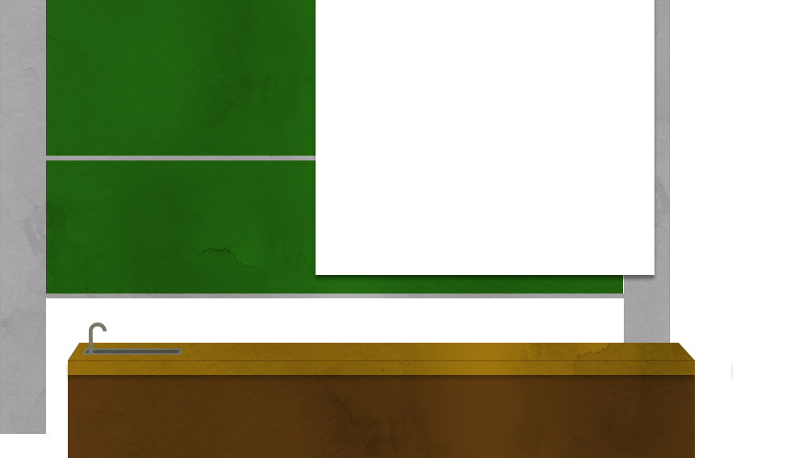
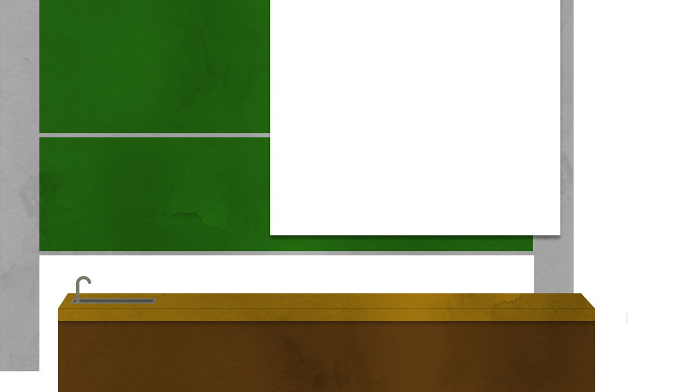
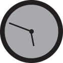
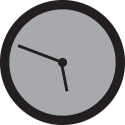

SCROLL ▶
SCROLL ▶
HAH! GESCHAFFT!
ENDLICH STUDENT!
Aber jeder Einstieg ist schwer. Besonders dieser!
Das Studium ist etwas komplett anderes als deine vorherige Arbeit oder Schule. Mehr Stress, weniger Zeit, aber auch 'ne Menge Spaß und viel Interessantes!

Such dir Kommilitonen, mit denen du klar kommst!
Kommilitonen sind existenziell! Von ihnen bekommst du wichtige Informationen, die nicht offiziell gesagt wurden oder du kannst dir Mitschriften aus der Vorlesung geben lassen, die du verpasst hast! Aber denk immer daran: Geben ist besser als nehmen!


 



Notizen sind wichtig.
Manchmal sind Skripte unidentifizierbar, da per Hand geschrieben. Mitschreiben ist dann essentiel.
Frueh Aufstehen
Manche Vorlesungen (und Praktika) fangen bereits um 8 Uhr morgens an.
Kaffee her!
Hohes Tempo
rituz j975 bnefjhlbv 3roz rgfjhk jhdf ilu wmf vbezi rzffsv lsdjhr #### !

Lerngruppen, Einzelgänger oder Bücherwurm
Nötiges Wissen kannst du dir auf verschiedene Weisen holen. Dabei solltest du nicht auf deine Kommilitonen verzichten! Jeder hat auf anderen Gebieten großes Wissen, was er mit dir oder du mit ihnen teilen kannst. Aber auch hier: Es liegt an dir, wie du am besten zurecht kommst.

Urlaub ist drin!
In den "Sommerferien" ist viel Zeit zwischen den Prüfungen – aber sei darauf gefasst, dass du dennoch viel zu lernen und nachzuholen hast!
Das kannst du aber eigentlich vergessen, wenn du das Studium in Regelstudienzeit abschließen willst!


 



Mit Nachtschichten muss gerechnet werden
Je nachdem, wann du mit den Aufgaben anfängst, kann sich das auch bis spät in die Nacht ziehen...
Die sind wirklich nicht zu unterschätzen!
All you need is...
Kaffee, Internet, Bücher aus der Bibliothek, Kaffee, Snacks zum Überleben, Kaffee
Doch es ist machbar!
Du musst selbst wissen, ob du eher auf letzte Minute alles schaffen willst, oder lieber andere Dinge dafür opferst und damit auf der sicheren Seite bist!


Beware of the Mensa
Jedes Gericht wurde zu 100% fritiert.
Und jede Sosse, besteht - ungelogen -
immer aus der selben Sahne Sosse